If you don't want to print now,
Sampling mechanism
The mechanism of sampling from a population explains randomness in data.
In practice, we must use a single sample to find information about the population.

Parameters and statistics
We usually focus attention on a small number of numerical characteristics.

Variability of sample statistics
The variability in random samples also implies sample-to-sample variability in sample statistics.

Distribution of the sample mean
The mean of a random sample of n values is a random quantity. Its distribution is centred on the population mean but its spread is lower then that of the population distribution.
Centre and spread of the sample mean's distribution
We can be more precise. If the population has mean µ and standard deviation σ, then the mean of a sample of n values,  ,
has a distribution with mean and standard deviation:
,
has a distribution with mean and standard deviation:
 = μ
= μ
 =
= 
Shape of the mean's distribution
Whatever the shape of the population distribution,
 = μ
= μ  =
= 
However skewness in the population distribution leads to some skewness in the distribution of the mean.
Samples from normal populations
When the population distribution is normal, the sample mean also has a normal distribution.
 ~ normal (μ ,
~ normal (μ ,  )
)

Means from non-normal populations
Irrespective of the shape of the population distribution,
 = μ
= μ  =
= 
If the population is not a normal distribution, the sample mean does not have a normal distribution. However the Central Limit Theorem states that...
For most non-normal population distributions, the distribution of the sample mean becomes close to normal when the sample size increases.

Sample mean and sum
The mean of a random
sample,  ,
has a distribution that is approximately normal if the sample size, n, is
large and alway has a
mean and standard deviation that depend on the population mean, µ, and standard deviation,
σ,
,
has a distribution that is approximately normal if the sample size, n, is
large and alway has a
mean and standard deviation that depend on the population mean, µ, and standard deviation,
σ,
 = μ
= μ
 =
= 
Occasionally the sum of values in a random sample values is more useful than the mean,
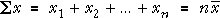
Its distribution is a scaled version of the distribution of the mean — the same shape but different mean and standard deviation.


Mean vs Sum
As the sample size increases,

Exercises are only available online.
Exercises are only available online.
Exercises are only available online.
Exercises are only available online.
Distribution of the sample mean
A population mean, µ, is usually estimated by the mean from a random sample.

If the population standard deviation is σ,  has a distribution with
has a distribution with
 = μ
= μ
 =
= 
and is approximately normal if the population is normal or n is reasonably large.
Distribution of the estimation error
Since the error in the estimate is simply the sample mean minus a constant (µ), its distribution has the same shape but is centred on zero,
error =  − µ ~ normal (0,
− µ ~ normal (0,
 )
)
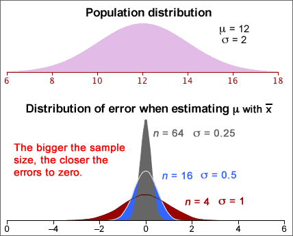
Standard error and bias
When the sample mean is used to estimate a population mean, µ, the estimator is unbiased.
error = μerror = 0
The estimator's standard error is the standard deviation of the error distribution,
standard error = σerror = 
Note that the error distribution does not depend on the value of µ. We can therefore evaluate the standard error provided the value of σ is known.
Example
We know that a particular type of measurement, X, has a normal distribution with known standard deviation σ = 0.0068 but unknown mean µ. A random sample of n = 16 values has sample mean 0.0724 and this is used to estimate µ . We can then find the distribution of errors that will arise using:
error ~ normal (0, σ = 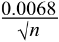)
For sample size n = 16, this error distribution is:
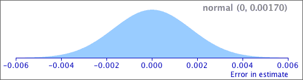
Interpreting the standard error
The 70-95-100 rule-of-thumb provides a useful interpretation of the standard error of an estimator.
There is approx 95% probability that the error is within 2SE of zero and it is almost certainly within 3SE of zero.
Note that the term standard error is often abbreviated to SE.
Example
A random sample of n values is taken from a population with distribution,
X ~ normal (μ , σ = 0.0068)
giving a sample mean that is 0.0724. This is our estimate of µ. The standard error of this estimate is
standard error = SE = 
The error in our estimate has about 95% chance of being within 2SE = 0.0034 of µ and is almost certain to be within 3SE = 0.0051 of it.
Difference between standard error and standard deviation
The standard deviation of a sample mean is closely related to the population's standard deviation:
 =
= 
For example,
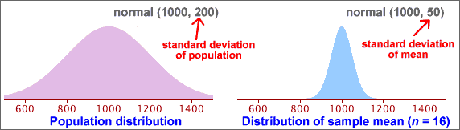
There is a similar relationship between the standard deviation of a sample and the standard error of the mean. Do not confuse them:
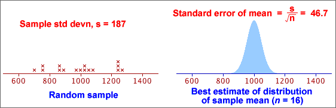
Common mistakes in interpretation
Warning
Be particularly careful when reading journal articles. Some papers use standard deviations (SD) to describe the distribution of variables, but others give the standard errors (SE) of the means of the variables.
Exercises are only available online.
Exercises are only available online.
Exercises are only available online.
95% bounds on the error
If we know the error distribution of an estimator (or an approximation to it), we can find a range of values within which the error will lie with probability 0.95,

Expressed in an equation,
Prob ( -e* < error < e* ) = 0.95
95% confidence interval
Since the error is the difference between the estimator and the unknown parameter, this can be rewritten as:
Prob ( estimate - e* < parameter < estimate + e* ) = 0.95
The interval
estimate - e* to estimate + e*
is called a 95% confidence interval and we have 95% confidence that it will include the unknown parameter value.
Confidence interval from standard error
The 70-95-100 rule of thumb states that about 95% of values in most distributions are within 2 standard deviations of the mean. For unbiased estimators (with zero mean), we therefore have the approximation:

This leads to the approximate 95% confidence interval
estimate - 2 s.e. to estimate + 2 s.e.
Since the standard error of most commonly used estimators can be readily found by either a formula or statistical software, a 95% confidence interval can be easily found for most estimators.
Refinements
If we can only find an approximation to the error distribution, the method above would only give an approximate 95% confidence interval. The '± 2 s.e.' approximation is a useful guide in most circumstances, but we will refine this type of confidence interval for some estimators to make the confidence level closer to 95%.
Estimating a population mean
We first examine how to estimate the mean, µ, of a population when the population standard deviation, σ, is a known value. (In practice, σ is usually unknown, but we leave this until later in this section.)
The sample mean,  , is approximately normal, with
, is approximately normal, with
 = μ
= μ
 =
= 
When  is used to estimate µ, the error is approximately
is used to estimate µ, the error is approximately
error =  − µ ~ normal (0,
− µ ~ normal (0,  )
)
so the standard error of  is
is  .
.
95% bounds for the error
Applying the 70-95-100 rule of thumb to the error distribution,
Prob( error is between ± 2 ) is approximately 0.95
) is approximately 0.95
This can be refined using the properties of the normal distribution to get an exact probability of 0.95.
Prob( error is between ± 1.96 ) = 0.95
) = 0.95
95% confidence interval
Since  will be within 1.96
will be within 1.96  of µ
with probability 0.95, we are 95% confident that µ
is in the interval
of µ
with probability 0.95, we are 95% confident that µ
is in the interval

This is a 95% confidence interval for µ and the interval has a confidence level of 0.95.
Example
Consider a type of measurement that is normally distributed with known σ but unknown mean, µ:
X ~ normal (μ , σ = 0.0068)
The mean of a random sample of n = 16 values will therefore be normally distributed with standard error
 = 0.0068 / 4 = 0.0017
= 0.0068 / 4 = 0.0017
From this, we can obtain bounds on the error:
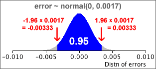
P(-0.00333 < error < 0.00333) = 0.95
If the sample data are:
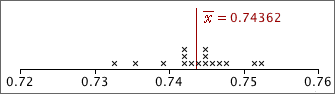
then a 95% confidence interval for µ would be
0.74362 ± 0.00333 = 0.74029 to 0.74695
We are 95% confident that µ is between 0.74029 and 0.74695.
Interpretation of a confidence interval
95% confidence intervals are found from sample data and are therefore random, so they do not always include the parameter that is being estimated.
The diagram below is based on a simulation of random samples of n = 20 values from a normal population. The 95% confidence intervals for µ were calculated using the known population standard deviation, σ = 2.
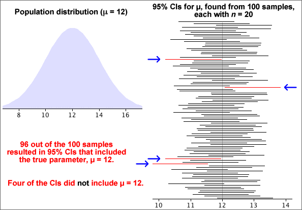
A few random samples resulted in CIs that did not include µ = 12 (the population mean used to generate the simulated samples). If we had continued the simulation with more samples, eventually 95% of the CIs would have included the true parameter value.
In practice, we only have a single sample, and we do not know whether or not it is one of the 'lucky 95%' whose confidence intervals include µ, but we are 95% confident that it is.
Knowing that confidence intervals obtained in this way will usually include it is very helpful. In practice,...
Being right most of the time is the best one can hope for, since there is always the possibility of being misled by an unlucky sample.
Exercises are only available online.
Exercises are only available online.
Exercises are only available online.
General framework
A similar approach to that for estimating a population mean is used for estimating population proportions and other parameters.
estimate - 2 s.e. to estimate + 2 s.e.
Population proportions and probabilities
Categorical data are usually treated as a random sample from some population. We concentrate on a single category which we will call success and we collectively call the other categories failures. The population proportion of successes is denoted by π. It is also the probability that a single randomly selected value from the population is a success.
We are interested in estimating an underlying probability, π. Although it is more general to treat π as a probability, it is usually easier to interpret π as a 'population proportion'.
Parameter estimate and error
The sample proportion of successes is denoted by p and is an estimate of π.

Since p is based on a random sample, it varies from sample to sample and has a distribution. The estimation error is:
error = p - π
Since π is unknown, we never know the value of the error, but we can find its approximate distribution. This will allow us to assess the likely size of the error.
Distribution of proportion
The proportion of successes from a random sample with probability π of success, p , has a distribution with mean and standard deviation
μp = π
σp = 
Distribution of estimation error
The estimation error is p - π and its distribution has the same shape as that of p, but is shifted to have mean zero. The bias and standard error are therefore
bias = μerror = 0
standard error = σerror = 
Standard error from data
Unfortunately, the formula for the standard error of p involves π, and this is unknown in practical problems. To get a numerical value for the standard error, we therefore replace π with our best estimate of its value, p .
bias = μerror = 0
standard error = σerror = 
Example
In a random sample of n = 36 values, there were x = 17 successes. Our best estimate of π is the sample proportion, p = 17/36. Using this estimate, the distribution of the number of successes in similar samples would be
X ~ binomial (n = 36, π = 17/36)
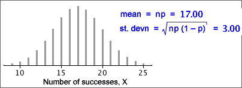
The proportion of successes in similar samples would have a scaled form of this distribution
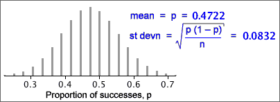
and the error distribution would shift this to have mean zero:
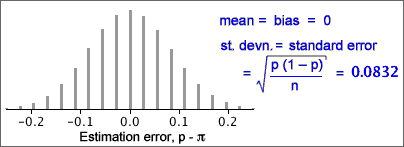
From this error distribution, it is unlikely that our estimate of the proportion of successes (17/36) would be in error by more than 0.2.
Normal approximation to the error distribution
If the sample size, n, is large enough, the binomial distribution is approximately normal, so we have the approximation
error = p − π ~ normal (0,  )
)
Example

The error distribution (and standard error) give a good indication of how far our point estimate (0.554) will be from the true proportion of adults in the park.
95% bounds on the estimation error
When sample proportion p is used to estimate a corresponding population proportion, π, the resulting error has the approximate distribution,
error = p − π ~ normal (0,  )
)
Replacing π by our best estimate, p , and using the properties of the normal distribution,
Prob( error is between ± 2 ) ≈ 0.95
) ≈ 0.95
95% confidence interval
A 95% confidence interval for π is therefore...

Example
In a random sample of n = 36 values, there were x = 17 successes. We estimate the population proportion, π, with p = 17/36 = 0.472. The approximate normal distribution for the errors is shown below.

A 95% confidence interval for π is therefore
0.472 ± 0.166
i.e. 0.306 to 0.638
We are therefore 95% confident that the population proportion of successes is between 30.6% and 63.8%. A sample size of n = 36 is clearly too small to give a very accurate estimate.
Properties
As with all other confidence intervals, a 95% confidence interval for a population proportion, π, is random. Although it correctly includes π in 95% of random samples, there is a 5% probability that it will not include the true value of π.
The simulation below took 100 random samples of size n = 200 from a population with π = 0.6. Most of the confidence intervals included π = 0.6, but some did not. If the simulation was repeated many more times, the proportion including 0.6 would be close to 0.95.
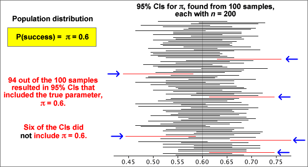
In practice, you only have a single sample and a single confidence interval, but we have "95% confidence" that it will include the true (and usually unknown) value of π.
Problems with small sample sizes
This confidence interval for π was based on a normal approximation to the distribution of the sample proportion. If the sample size, n, is small or π is close to either 0 or 1, this normal approximation is inaccurate and the confidence level for the interval can be considerably less than 95%.
Many textbooks give the following guideline for using the confidence interval:
Only use the confidence interval for π when all of
the following hold...
|
These guidelines can be relaxed a little provided you accept that the confidence level may be a little less than 95%.
Interpretation of a confidence interval
We never know in practice whether or not the confidence interval that we obtain actually includes π.
Being right most of the time is the best one can hope for, since there is always the possibility of being misled by an unlucky sample.
The method that we use to obtain the confidence interval has probability 0.95 of including π. We cannot tell whether the single interval that we evaluate from our data set is one of these 'lucky' intervals, but knowing that the method works so often gives us 95% confidence in this interval.
Example

Exercises are only available online.
Exercises are only available online.
Exercises are only available online.
Worst-case standard error
The standard error of a sample proportion, p, has standard error
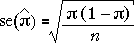
This is greatest when π = 0.5 and this provides a worst-case value for the standard error. Whatever the value of π, the standard error of the estimate will be less than
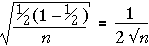
Reporting the accuracy from a survey
Public opinion polls often ask questions about a range of topics. Several proportions are usually estimated and a standard error and confidence interval could be found for each. (The standard error would vary depending on the particular sample proportion, p.)
Rather than giving separate confidence intervals for the individual proportions, the poll results are usually accompanied by a single value called the margin of error of the poll. This is the worst-case '±' value for a 95% confidence interval that arises when p = 0.5.

The '±' values of the 95% confidence intervals for all proportions reported in the poll will be less than this value — sometimes considerably less.
How much data do I need to collect?
Consider estimation of a population mean, µ, from a random sample of size n. A 95% confidence interval will be of the form

If we want our estimate to be within k of µ with probability 0.95, then we need n to be large enough that

Provided we can make a reasonable guess at the likely value of the sample standard deviation, s, it is possible to determine the necessary sample size by trial-and-error in the above inequality.
Equation for the sample size
If n is reasonably large the t-value in the inequality will be approximately 1.96, so

This inequality can be re-written in the form

In practice, it is best to increase n a little over this value in case the sample standard deviation was wrongly guessed.
Example
If we expect that a particular type of measurement will have a standard deviation of about 8, and we want to estimate its mean, µ, to within 2 of its correct value with probability 0.95, the sample size should be
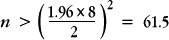
This suggests a sample size of at least 62. (The more accurate trial-and-error method using a t-value would give a sample size of 64.)
How much data do I need to collect?
A 95% confidence interval for a probability π is of the form

If we want our estimate to be within k of π with probability 0.95, then we need n to be large enough that

In order to use this inequality, we need a guess at the value of p — it does not need to be particularly accurate.
A small pilot survey is often conducted to obtain a preliminary estimate for the proportion.
If we can do no better, the 'worst-case' value, p = 0.5 can be used, but the resulting sample size may be higher than needed.
Equation for the sample size
The inequality can be re-written in the form
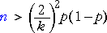
Example
To estimate a proportion with 95% confidence of being within 0.04 of the correct value, we need
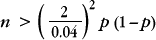
Without a better guess at the value of p, we can use p = 0.5, giving a sample size of 625 or more. If we had a rough idea of the likely value of p, the sample size could be reduced from this worst-case value.
Confidence interval for a mean
If the population standard deviation, σ, is a known value, a confidence interval for a population mean, µ has the form
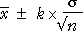
The value k arises from the standard normal distribution,

The value k = 1.96 gives a confidence level of 95%, but different confidence levels can be found with other values of k.
| k | Confidence level |
|---|---|
| 1 | 0.683 |
| 2 | 0.954 |
| 3 | 0.997 |
| 1.645 | 0.90 |
| 1.960 | 0.95 |
| 2.576 | 0.99 |
Although 95% confidence intervals are most commonly reported, sometimes k is chosen to give a 90% or 99% confidence interval.
Estimating a probability with different confidence levels
A 95% confidence interval for a probability, π, has the form

Replacing the constant 2 with 1.645 gives an interval with approximately a 90% confidence level, and using 2.576 results in a 99% confidence level.
Estimating a population mean (unknown standard deviation)
When the population standard deviation, σ, is unknown, a 95% confidence interval for µ has the form

where tn-1 is obtained from a table. Changing the confidence level to 90% or 99% involves changing this constant. The appropriate value can again be obtained from a table. (We give no further details here.)
Exercises are only available online.
Exercises are only available online.
Exercises are only available online.
Exercises are only available online.
Difference between means
The difference between any two independent quantities X1 and X2 has a distribution with

Applying this to the difference between the means of two random samples,

Irrespective of the distributions within the
two groups,
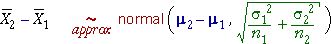
Estimation error
The difference between the sample means,  ,
is a point estimate of the difference between the means of the underlying populations, µ2 - µ1.
In order to properly interpret it, we must understand the distribution of
the estimation error.
,
is a point estimate of the difference between the means of the underlying populations, µ2 - µ1.
In order to properly interpret it, we must understand the distribution of
the estimation error.

Replacing σ12 and σ22 by s12 and s22 gives an approximate error distribution,

The standard deviation of these errors is the standard error of the estimator.
Examples
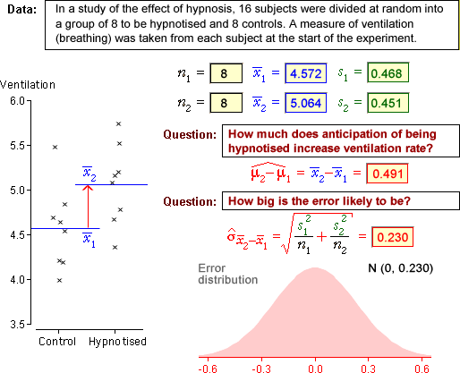
Our best estimate is that anticipation of hypnosis results in a mean ventilation rate that is 0.491 higher than the control group. From the error distribution, the error in this estimate is unlikely to be more than about 0.6.